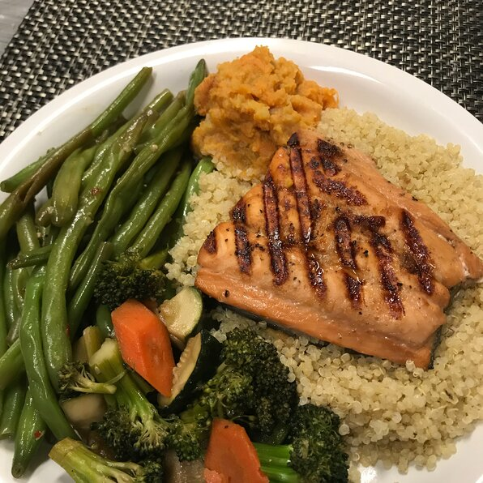

Grilled Salmon

Description
A simple soy sauce and brown sugar marinade, with hints of lemon and
garlic, are the perfect salty-sweet complement to rich salmon fillets.
Even my 9 year old loves this recipe!
Ingredients
- 1 ½ pounds salmon fillets
- lemon pepper to taste
- garlic powder to taste
- salt to taste
- ⅓ cup soy sauce
- ⅓ cup brown sugar
- ⅓ cup water
- ¼ cup vegetable oil
Steps
- Season salmon fillets with lemon pepper, garlic powder, and salt.
- Preheat grill for medium heat.
-
Lightly oil grill grate. Place salmon on the preheated grill, and
discard marinade. Cook salmon for 6 to 8 minutes per side, or until the
fish flakes easily with a fork.
Original recipe found at
allrecipes.com
← Go back